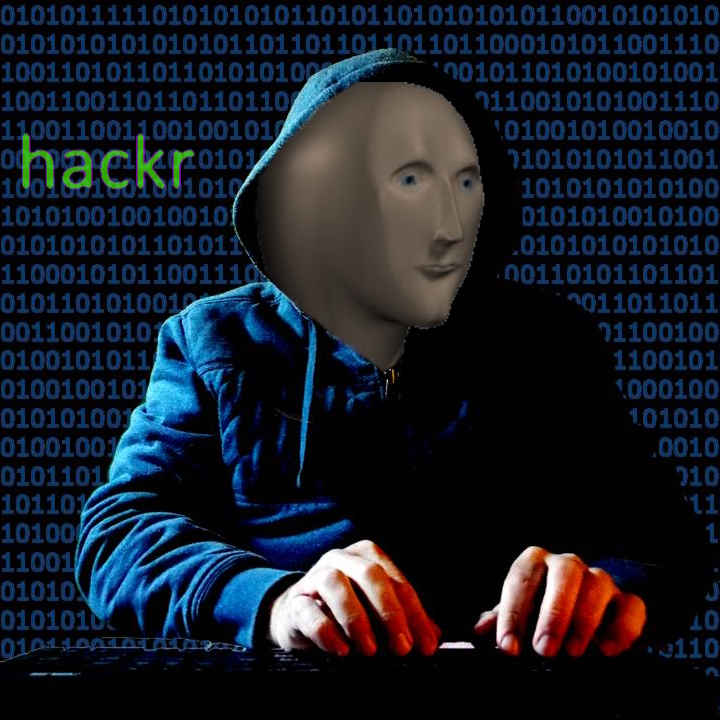

Computer Sciences

After a "classe prépa" in Lyon, I entered the department of computer sciences at ENS where I studied for 3 years different topics of TCS, including algorithms, cryptology, robotics, machine learning and deep-learning. I took part in some projects of Gaia Carenini in Metaphor Understanding and Explainable Machine Learning for Astronomy, with conference and journal papers soon to be published.